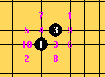
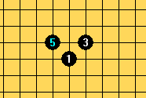
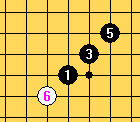

我自己的终结者设置和深度理解
#1 我自己的终结者设置和深度理解 作者：陶涛业余 发表时间：2011-10-22 14:42:10
当年一狠心买了终结者。。。现在终结者已经出到2011 Build5了。。。希望4哥不断努力，继续加油！！！
由于我不是软件的作者，也不是五子棋玩家，所以这里也只是我本人的一些片面的观点，说出来不怕大家笑话，恳请大家发现问题及时批评斧正！！！
对于11版的终结者，发现有一些项目不能设置，有一些项看不懂，有待我们慢慢探索。
一、VCT设置
点击“锁”进入VCT设置，由于现在常见配置个人计算机内存一般都在2-4GB，所以我将内存使用设置为262144KB。理论上，内存设置的越大，地毯式搜索计算越快。但是大家知道，由于计算是要产生大量临时数据的，会有大量临时数据的读写操作，所以使用内存过大的话，势必非常伤机器，对于计算机的硬件将是一个极大地挑战，所以我建议经常用终结者算杀、做谱的同志们，为了爱护你的计算机，尽量节约你的开支，请多加一个小硬盘（将来就报废那只盘），将计算机的虚拟内存调大一些，2GB吧，就把虚拟内存的Pagefile设置在那个你愿意用来报废的硬盘里，要伤硬盘的话，不能伤了数据盘，经常做计算的人这点是有经验的。
再来看VC3和VCF搜索深度，这是程序在每一个已选择的父节点下，进行连续冲三和连续冲四的进攻手段的深度。在以后每一步有连续进攻的前提下，这种进攻往往是强有利的进攻，而且在每一步进攻后，程序下一步只会进行接下来的冲三或冲四进攻，一般不考虑防守棋形，防守的点一般是在当前盘面分数下，选择一个分数最高的进行防守。所以一般在局面已经大优的情况下才会迅速的杀出来。而且当前的盘面分数高不代表是最强防守。搜索深度，这个大家能猜出大概意思，搜索深度为5就进攻五步，搜索深度越大就计算的越深。
搜索的顺序是这样的：先在当前盘面进行深度为1的选点搜索进攻，没有必胜，此时记录下每一个选点的着法得分，然后，以2为深度，按照着法得分从高到低，逐点扫描进攻，扫描完以后，对每个点的着法得分进行修正；若没有杀，以3为深度，按照修正以后的着法得分选点，逐点计算VC3或VCF杀。假如计算机在第x步进攻以后（x小于你设置的搜索深度）攻完了，没有进攻了，程序就会开始考虑做棋后再进攻，选择当前局面的当前招法从高到低选点做棋，再选择对房的着法得分相应防守。这样进行循环计算，直到x等于设置的深度为止，最后在盘面上落下一子经过多次循环计算后得分最高的点。我的设置是15步搜索，程序计算时最下面一行会显示当前搜索深度，我一般在深度达到12还没有杀时就按Ecs键停止计算了。
再看招法距离，连续两次攻击招法距离指的是，前一次攻击和后一次攻击在盘面上相差的距离，这个距离越大就越灵活，比如前一手在上方攻击，第二手想在下方攻击，所以，两招攻击的距离就会很大，尤其是在中盘，盘面上大范围分布棋子，这个距离若不够大，就会限制攻击的区域和范围，我将连续量共计招法距离设置为10，这样能保证在程序的能力范围内多处有利进攻。
全面搜索深度，根据4哥的说法：“有些比较偏的招法搜索起来很费劲，这里加上这个参数就是彻底全面搜索VC3的深度”我的理解，由于选点比较多，而某些比较偏的进攻选点，可能很难有杀甚至是败点，但是五子棋毕竟很复杂，有些很偏的招确实是必胜，但是逐个搜这些点很费时间又舍不得放弃，结果就给他们一些计算量。你可以看到程序在计算时主要选点上停留的计算时间很多，在次要点上只是地毯式的停留一下，说明在次要选点上没有话太大的功夫计算，一带而过，偶尔的在那些点上要是有简单的杀，程序就不会漏。所以要是在那些点上有很复杂的杀，而设置的全面搜索深度太小，程序就没法计算出来，这就是漏杀的原因，但是为了防止漏杀，设置太大又显得浪费时间。
我处理这个问题：当局面比较乱乱，但是还是有2可活的时候，比如瑞星吧，可以不妨试试把全面搜索深度调大后搜索（我觉得人脑选点更有用，但我这是针对程序的使用方法，我在此强调人脑就显得有些废话了），比如调成8-12，这样如果你的CPU不够快的话，真的很花时间的。对于中盘搜杀就可以调大些，但是我建议相应的地把选点个数和最大选点个数改小，比如改成30，这样少浪费一点时间。若是能够结合人工选点就更好了，节约了更多的时间，人工选点的方法我将在后面将讲。 当局面不是很乱，或者你觉得偏僻的点不需要计算时，比如说黑优的局面或者活二都已经找不着的平衡局面。。。凭自己判断吧，此再把设置改成全面搜索深度为3-5，选点个数改大（60）所以不同的情况要改一改设置适应不同的情况。
下面说选点个数，我的选点个数默认60，目的是为了防止漏杀，但是当全面搜索深度过大时，选点个数太大会导致每一个点停留时间过长，结果没耐心
#2 Re:我自己的终结者设置和理解 作者：陶涛业余 发表时间：2011-10-22 14:57:47
本以为我有能力写一篇技术贴什么的，写到现在我感觉极其费脑。。。
完全不能胜任写技术贴这样的专业活儿，但是还是尽力为之吧，希望得到大家多多的帮助，另外我下棋水平太差，，，
求仙人指路
#3 Re:我自己的终结者设置和理解 作者：裁决殿雪月 发表时间：2011-10-22 15:08:22
一直用盗版的路过……#4 Re:我自己的终结者设置和理解 作者：陶涛业余 发表时间：2011-10-22 15:20:58
盗版的那个软件有一些和正版不一样的功能，有些设置正版的没有，经过改设置后，盗版的可以用的很顺
嗯，改天发一个盗版的设置和个人理解的使用方法
［ 极地剑客 于 2011-10-23 5:30:27 时花20金币送鲜花一朵］
#5 Re:我自己的终结者设置和理解 作者：失落刀 发表时间：2011-10-22 15:22:51
最好直接上图。［ 极地剑客 于 2011-10-23 5:30:17 时花20金币送鲜花一朵］
#6 Re:Re:我自己的终结者设置和理解 作者：陶涛业余 发表时间：2011-10-22 16:19:14
引用：我的威望不够，不能发图啊。。。
原文由 失落刀 发表于 2011-10-22 15:22:51 :
最好直接上图。
#7 Re:我自己的终结者设置和深度理解 作者：掌棋宣传员 发表时间：2011-10-22 18:24:40
写的很不错啦~#8 Re:我自己的终结者设置和深度理解 作者：卧龙孔明 发表时间：2011-10-22 20:04:23
对软件的理解，永远不会超过软件设计者本身。［ 陶涛业余 于 2011-10-25 8:08:21 时花20金币送鲜花一朵］
#9 Re:Re:我自己的终结者设置和深度理解 作者：陶涛业余 发表时间：2011-10-22 20:22:26
引用：谢谢夸奖！！！我会更加努力~~~
原文由 掌棋宣传员 发表于 2011-10-22 18:24:40 :
写的很不错啦~
#10 Re:Re:我自己的终结者设置和深度理解 作者：陶涛业余 发表时间：2011-10-22 20:39:47
引用：
原文由 卧龙孔明 发表于 2011-10-22 20:04:23 :
对软件的理解，永远不会超过软件设计者本身。
你这句话我非常赞同，因为我非常佩服软件作者将如此大规模的功能集中于区区300KB，这是一个完整的数据库产生、查询、调用系统。
另外我对软件的设计思想与软件作者肯定不尽相同，只可惜软件设计者并没有将他的思路拿出来，所以要写这个东西，简单的目的有以下几个：一来获得与软件作者取得沟通交流的机会，对开发者提一些个人觉得可能有帮助的建议，希望能交到开发者这样优秀的朋友。二来，帮助开发者补全解释不完整的这一小小的遗憾。大多数软件使用者下棋的实力都是超过软件的，但是并不是每一个人都能够对软件有较好的把握，你可以看出来不少棋友对于软件的不少功能不了解，所以我写此为了能够有所帮助。三、软件使用者中有很多高手，我很希望与他们交流，我是下棋的菜鸟，我唯独担心我的错误理解会误导别人。四则，软件的充分利用与发掘，有利于帮助促进五子棋研究，改善程序的计算问题，也有利于帮助开发者推广产品
［ 闫荣辉 于 2011-10-22 22:20:31 时花20金币送鲜花一朵］
［ 闫荣辉 于 2011-10-23 0:59:29 时花20金币送鲜花一朵］
［ 极地剑客 于 2011-10-23 5:28:24 时花20金币送鲜花一朵］
［ 有志青年 于 2011-10-23 9:21:09 时奖励此帖[金币加 100 威望加1］
#11 Re:我自己的终结者设置和深度理解 作者：aabb 发表时间：2011-10-23 1:50:29
难得一见的技术贴啊。顶了。另外，我理解的VC2怎么是提前做杀（就是补全VCT的前一手）？
比如这个局面：
现在黑没有VCT，但是走了I8之后就有VCT了。I8这样的下法就是VC2。
我的理解有什么问题吗？
#12 Re:我自己的终结者设置和深度理解 作者：极地剑客 发表时间：2011-10-23 5:28:02
此版块终于出技术贴了。顶失落刀，上图才是王道，至于发图的声望，楼上好几个都是管理哈［ 陶涛业余 于 2011-10-25 8:10:23 时花20金币送鲜花一朵］
#13 Re:我自己的终结者设置和深度理解 作者：梧桐风 发表时间：2011-10-23 8:56:47
偶觉得既然可以发主帖了，就不应该限制发图片#14 Re:Re:我自己的终结者设置和深度理解 作者：陶涛业余 发表时间：2011-10-23 14:46:43
引用：
原文由 aabb 发表于 2011-10-23 1:50:29 :难得一见的技术贴啊。顶了。另外，我理解的VC2怎么是提前做杀（就是补全VCT的前一手）？
现在黑没有VCT，但是走了I8之后就有VCT了。I8这样的下法就是VC2。
我的理解有什么问题吗？
我觉得你的理解是对的，程序搜索VC2，应该就是连续活二的机会，因为只有连续活二才能有VCT，
而且你给出的I8点是在进攻路线中除了直接进攻，得分最高的点
这是进攻路线着法排序I8仅次于活三
可是在用程序求VC2或局部VC2时，得到的必胜不在I8
这是VC2和局部VC2解，结果给出a， 这是VC3解，结果没有给出a，说明VC2伴随着VCT，但是VC3只能按照着法排序，在有VCF的时候才能起作用，个人理解，VC2的作用相当于为活三做准备，解得的是VCT，而VC3是为冲四准备，
这是VC3解，结果没有给出a，说明VC2伴随着VCT，但是VC3只能按照着法排序，在有VCF的时候才能起作用，个人理解，VC2的作用相当于为活三做准备，解得的是VCT，而VC3是为冲四准备，
像这样的情况用VC3是搜不出杀，只有VC2才行，但VC3可以给出攻防得分综合较高的点
#15 Re:我自己的终结者设置和深度理解 作者：极地剑客 发表时间：2011-10-23 16:49:27
楼主发些牛B07.08.09.10.11设置截图撒~坐等讲解#16 Re:Re:我自己的终结者设置和深度理解 作者：陶涛业余 发表时间：2011-10-23 16:55:01
引用：好，我尽量将它的较老版本再研究研究理解全面，可是马上就要期中考试了，我先准备考试。先等一下下啊。
原文由 极地剑客 发表于 2011-10-23 16:49:27 :
楼主发些牛B07.08.09.10.11设置截图撒~坐等讲解
［ 闫荣辉 于 2011-10-23 18:23:13 时花20金币送鲜花一朵］
#17 Re:Re:Re:我自己的终结者设置和深度理解 作者：闫荣辉 发表时间：2011-10-23 18:24:35
引用：这个不急的，讲得早不如讲得好，学习还是第一位的。楼主如此用心，学习肯定很好，祝其中考试取得好成绩。
原文由 陶涛业余 发表于 2011-10-23 16:55:01 :引用：好，我尽量将它的较老版本再研究研究理解全面，可是马上就要期中考试了，我先准备考试。先等一下下啊。
原文由 极地剑客 发表于 2011-10-23 16:49:27 :
楼主发些牛B07.08.09.10.11设置截图撒~坐等讲解［ 闫荣辉 于 2011-10-23 18:23:13 时花20金币送鲜花一朵］

［ 陶涛业余 于 2011-10-25 8:09:01 时花20金币送鲜花一朵］
#18 Re:Re:Re:我自己的终结者设置和深度理解 作者：极地剑客 发表时间：2011-10-23 22:42:53
引用：
原文由 陶涛业余 发表于 2011-10-23 16:55:01 :引用：好，我尽量将它的较老版本再研究研究理解全面，可是马上就要期中考试了，我先准备考试。先等一下下啊。
原文由 极地剑客 发表于 2011-10-23 16:49:27 :
楼主发些牛B07.08.09.10.11设置截图撒~坐等讲解［ 闫荣辉 于 2011-10-23 18:23:13 时花20金币送鲜花一朵］
竟然还是学生啊~好好考试吧~
#19 Re:我自己的终结者设置和深度理解 作者：十方俱灭 发表时间：2011-10-23 22:50:06
不给力，设置之后算杀不够猛#20 Re:Re:我自己的终结者设置和深度理解 作者：陶涛业余 发表时间：2011-10-24 11:16:37
引用：你想想啊，这样的设置是为了做棋谱和研棋算杀用的，尽可能地让程序多计算，但是代价就是搜索速度当然慢，想做棋，必须用人脑，人脑做强点，做强势，程序才会杀，如果指望程序帮着做棋，你就小看五子棋了。
原文由 十方俱灭 发表于 2011-10-23 22:50:06 :
不给力，设置之后算杀不够猛
［此帖子已被 陶涛业余 在 2011-10-24 11:31:41 编辑过］